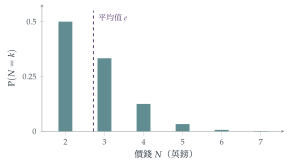

STEP I 1996，第 13 題
繼續之前，請先閱讀題目（原題為英文）。題目載於 STEP Support Programme 的題目資料庫： step.maths.org/questions/96-s1-q13
引子
有這樣一種古怪的賣郵票方法：買家不斷猜郵票藏在哪一個杯子下面，每一輪多加一個杯子；到他第一次猜錯時，桌上有多少個杯子，他就要付多少英鎊。平均而言，他要付 \(\pounds e\)，約為 \(\pounds 2.72\)。
\(e\) 這個數在概率（probability）中出現之頻繁，簡直不可思議：沒有人拿回自己襯衫的機會（第 9.8 節）、祕書問題（secretary problem，第 12.12 節）、泊松分佈（Poisson distribution）。本題也許是它眾多現身之中最簡單的一次，而且原來它與另一道著名謎題有着完全相同的分佈（distribution）：要把多少個介乎 \(0\) 與 \(1\) 之間的隨機數相加，總和才會超過 \(1\)？平均而言，是 \(e\) 個。
動筆之前
若 \(N = 4\)，必須發生甚麼事？概率是多少？
Jim 必須在有 \(2\) 個杯子時猜中（概率為 \(\frac12\)），在有 \(3\) 個杯子時也猜中（\(\frac13\)），然後在有 \(4\) 個杯子時猜錯（\(\frac34\)）。所以 \(\mathrm{P}(N = 4) = \frac12\cdot\frac13\cdot\frac34 = \frac{3}{4!} = \frac18\)。
逐步解題
階段 1 分佈
若 \(N = k\)（其中 \(k \geq 2\)），Jim 在有 \(2, 3, \ldots, k - 1\) 個杯子時都猜中，而在有 \(k\) 個杯子時猜錯： \[\mathrm{P}(N = k) = \frac12\cdot\frac13\cdots\frac{1}{k - 1}\cdot\frac{k - 1}{k} = \frac{k - 1}{k!}.\] （驗算：\(\frac{1}{2!} + \frac{2}{3!} + \frac{3}{4!} + \cdots = \sum_{k \geq 2}\bigl(\frac{1}{(k-1)!} - \frac{1}{k!}\bigr) = 1\)，這是一個裂項和（telescoping sum）。）
階段 2 期望值
化簡 \(k\cdot\frac{k - 1}{k!}\)。你會得到甚麼級數（series）？
\[\mathrm{E}(N) = \sum_{k \geq 2}\frac{k(k - 1)}{k!} = \sum_{k \geq 2}\frac{1}{(k - 2)!} = \frac{1}{0!} + \frac{1}{1!} + \cdots = e. \qed\]
階段 3 方差
求 \(\mathrm{E}(N^2)\)：可寫成 \(k^2 = k(k - 1) + k\)，或直接化簡 \(\frac{k^2(k-1)}{k!}\)。
\[\mathrm{E}(N^2) = \sum_{k \geq 2}\frac{k^2(k - 1)}{k!} = \sum_{k \geq 2}\frac{k}{(k - 2)!} = \sum_{j \geq 0}\frac{j + 2}{j!} = \sum_{j \geq 1}\frac{1}{(j - 1)!} + 2\sum_{j \geq 0}\frac{1}{j!} = e + 2e = 3e.\] 所以 \(\mathrm{Var}(N) = 3e - e^2 = e(3 - e) \approx 0.766\)。■

回顧
概率的乘積。一連串獨立（independent）的成功之後接着一次失敗，所得的乘積可化簡為 \(\frac{k-1}{k!}\)。
約去階乘。乘以 \(k\) 或 \(k^2\) 再約簡，那些和式就變成了指數級數（exponential series）。
以平移求 \(\mathrm{E}(N^2)\)。以 \(j = k - 2\) 重新編排下標，和式便分拆成兩份 \(e\)。
背後的數學
換了裝扮的同一個分佈
從 \([0, 1]\) 中均勻（uniformly）地隨機選取數 \(U_1, U_2, \ldots\)，並設 \(M\) 為令它們的總和超過 \(1\) 所需的個數。首 \(k\) 個數之和小於 \(1\) 的概率，就是區域 \(\{u_1 + \cdots + u_k < 1, u_i \geq 0\}\) 的體積，即 \(\frac{1}{k!}\)（面積為 \(\frac12\) 的三角形、體積為 \(\frac16\) 的四面體，如此類推）。所以 \[\mathrm{P}(M > k) = \frac{1}{k!}, \qquad \mathrm{P}(M = k) = \frac{1}{(k - 1)!} - \frac{1}{k!} = \frac{k - 1}{k!},\] 正正就是 \(N\) 的分佈。在兩個問題中都有 \(\mathrm{P}(N > k) = \frac{1}{k!}\)：就杯子而言，這是連續猜中 \(k - 1\) 次的概率。利用 \(\mathrm{E}(N) = \sum_{k \geq 0}\mathrm{P}(N > k)\)（第 9.9 節 中的一條公式），一行便得出 \(\mathrm{E}(N) = \sum\frac{1}{k!} = e\)。
為何 \(e\) 不斷出現
每當概率中含有 \(\frac{1}{k!}\)，不論它來自 \(k\) 件物件按某個特定次序排列、\(k\) 個概率依次為 \(\frac12, \frac13, \ldots\) 的相繼事件，還是單純形（simplex）的體積，對 \(k\) 求和都會產生指數級數。錯排（derangements，第 9.8 節）給出 \(\sum\frac{(-1)^k}{k!} = e^{-1}\)；這裏我們則有 \(\sum\frac{1}{k!} = e\)。至於形如 \(\bigl(1 - \frac1n\bigr)^n \to e^{-1}\) 的極限（limit），它們源自大量獨立而不大可能發生的事件，正好解釋了祕書問題和泊松分佈中的 \(e\)。
「總和超過 \(1\)」這個問題提供了一個以實驗估計 \(e\) 的方法：產生隨機數，數一數需要多少個才超過 \(1\)，重複多次，然後取平均值。它是蒲豐投針（Buffon’s needle，第 12.20 節）的近親，後者用來估計 \(\pi\)。這類蒙地卡羅（Monte Carlo）方法以賭場命名，利用隨機抽樣來估計難以直接計算的量；如今它們廣泛應用於科學的各個範疇，由粒子物理學到金融，主要用於計算高維積分。
思維技巧
當期望值是一個含有階乘的和式時，把各項化簡，直至出現一個標準級數（指數級數、幾何級數、二項級數）。
在大學，生成函數（generating function）把這種做法系統化：概率生成函數（probability generating function）\(\mathrm{E}(t^N)\) 把整個分佈包裝起來，而它在 \(t = 1\) 處的導數則給出平均值和方差。
延伸練習
生成函數。證明 \(\mathrm{E}(t^N) = 1 + (t - 1)e^t\)，並用它求 \(\mathrm{E}(N)\) 和 \(\mathrm{E}(N(N - 1))\)。
尾部公式。對於取非負整數值的隨機變量（random variable），證明 \(\mathrm{E}(N) = \sum_{k \geq 0}\mathrm{P}(N > k)\)，並用它一行求出 \(\mathrm{E}(N)\)。
由一個杯子開始。假如遊戲由一個杯子開始（Jim 不可能猜錯），分佈會有甚麼改變？價錢的期望值是多少？
單純形。證明 \(\{u_1 + u_2 + u_3 < 1, u_i \geq 0\}\) 的體積為 \(\frac16\)，並用歸納法（induction）證明 \(k\) 維的情況為 \(\frac{1}{k!}\)。
延伸閱讀
Eli Maor, e: The Story of a Number（Princeton University Press）。\(e\) 的歷史，包括它在概率中的各次現身。
Geoffrey Grimmett & Dominic Welsh, Probability: An Introduction（Oxford University Press），關於生成函數。
Paul Nahin, Digital Dice（Princeton University Press）。以蒙地卡羅模擬解決的概率謎題。